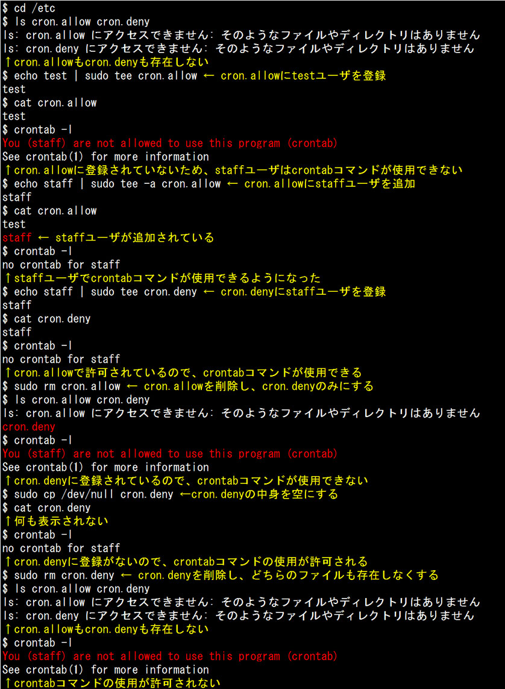
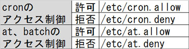
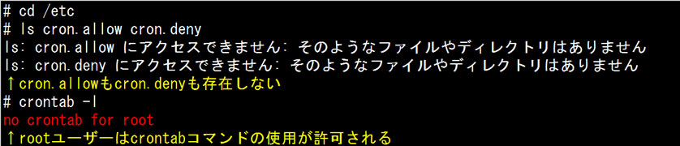
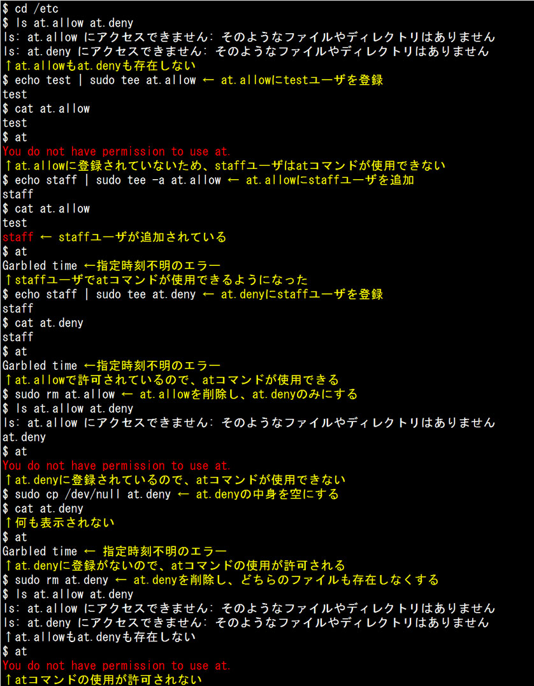
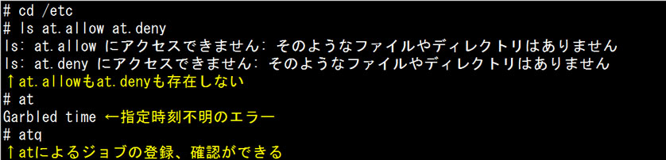

- 問題ID : 15797 ジョブスケジューリング
- 履歴
「/etc/cron.allow」と「/etc/cron.deny」ファイルが存在しない場合、crontabコマンドを使用できるユーザはどれか。
正解
rootユーザ
解説
cronを利用するユーザを制限するには、「/etc/cron.allow」ファイルと「/etc/cron.deny」ファイルを使用します。
各ファイルは以下の順序で評価されます。
1. 「/etc/cron.allow」ファイルがあれば、記述のあるユーザのみが利用可能
2. 「/etc/cron.allow」ファイルがなければ、「/etc/cron.deny」を参照し、そこに記述のないユーザが利用可能
3. 両方のファイルがなければ、rootユーザのみが利用可能
上記3.のように両方のファイルが存在しない場合、cronを利用できるのはrootユーザのみ、つまりcronの設定を行うcrontabコマンドを使用できるのはrootユーザのみです。
その他の一般ユーザがcrontabコマンドを使用するには、「/etc/cron.allow」にユーザを記述するか、「/etc/cron.deny」にコマンドを禁止するユーザのみを記述します。
したがって正解は
・rootユーザ
です。
以下は「cron.allow」と「cron.deny」の定義に関するstaffユーザーでの実行例です。

その他の選択肢については以下のとおりです。
・全ての一般ユーザ
両方のファイルが存在しない場合、crontabコマンドを使用できるのはrootユーザのみです。
・「/etc/at.allow」に記述されているユーザ
・「/etc/at.deny」に記述されていないユーザ
これらはat、batchを利用するユーザを制限するファイルなので、cronとは関係ありません。
参考
以下はcronおよびat、batchのアクセス制御に使用されるファイルをまとめたものです。

■cronのアクセス制御
cron を利用するユーザを制限するには、「/etc/cron.allow」ファイルと「/etc/cron.deny」ファイルを使用します。「/etc /cron.allow」には利用を許可するユーザを、「/etc/cron.deny」ファイルには利用を拒否するユーザを記述します。
各ファイルは以下の順序で評価されます。
1. 「/etc/cron.allow」ファイルがあれば、記述のあるユーザのみが利用可能
2. 「/etc/cron.allow」ファイルがなければ、「/etc/cron.deny」を参照し、そこに記述のないユーザが利用可能
3. 両方のファイルがなければ、rootユーザのみが利用可能
つ まり、「/etc/cron.allow」ファイルが存在する場合、「/etc/cron.deny」ファイルの設定は無視されます。また、「/etc /cron.allow」がなく「/etc/cron.deny」の中身に何も記述されていなければ、すべてのユーザが利用可能となります。
以下は「cron.allow」と「cron.deny」の定義に関するstaffユーザーでの実行例です。
なお、UbuntuなどのDebian系では「どちらも存在しない場合は全てのユーザーが利用可能」となります。
rootユーザーの場合、両方のファイルが存在しない場合でも利用可能です。

■at、batchのアクセス制御
at、 batchを利用するユーザを制限するには、「/etc/at.allow」ファイルと「/etc/at.deny」ファイルを使用します。「/etc /at.allow」ファイルには利用を許可するユーザを、「/etc/at.deny」ファイルには利用を拒否するユーザを記述します。
各ファイルはcronと同様に以下の順序で評価されます。
1. 「/etc/at.allow」ファイルがあれば、記述のあるユーザのみが利用可能
2. 「/etc/at.allow」ファイルがなければ、「/etc/at.deny」を参照し、そこに記述のないユーザが利用可能
3. 両方のファイルがなければ、rootユーザのみが利用可能
つ まり、「/etc/at.allow」ファイルが存在する場合、「/etc/at.deny」ファイルの設定は無視されます。また、「/etc /at.allow」がなく「/etc/at.deny」の中身に何も記述されていなければ、すべてのユーザが利用可能となります。
以下は「at.allow」と「at.deny」の定義に関するstaffユーザーでの実行例です。

rootユーザーの場合、両方のファイルが存在しない場合でも利用可能です。
